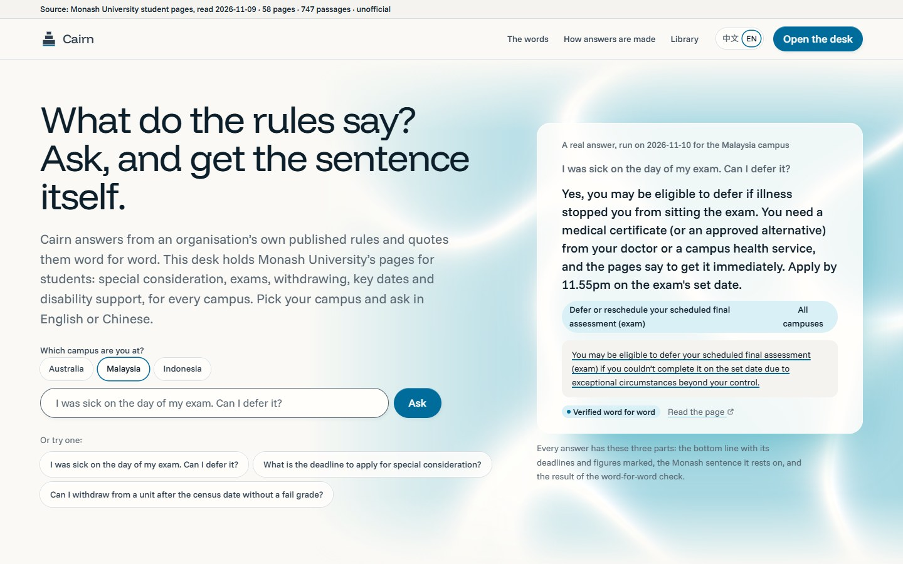
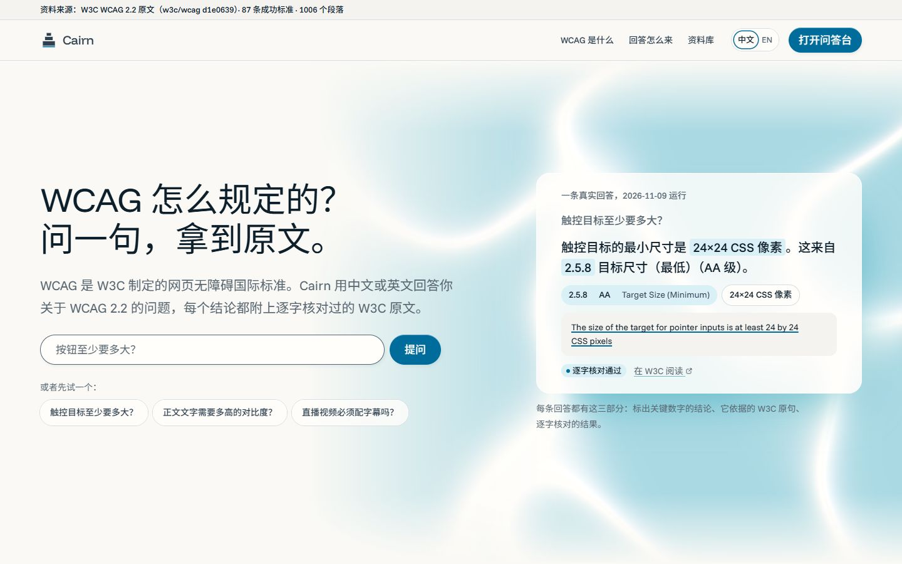
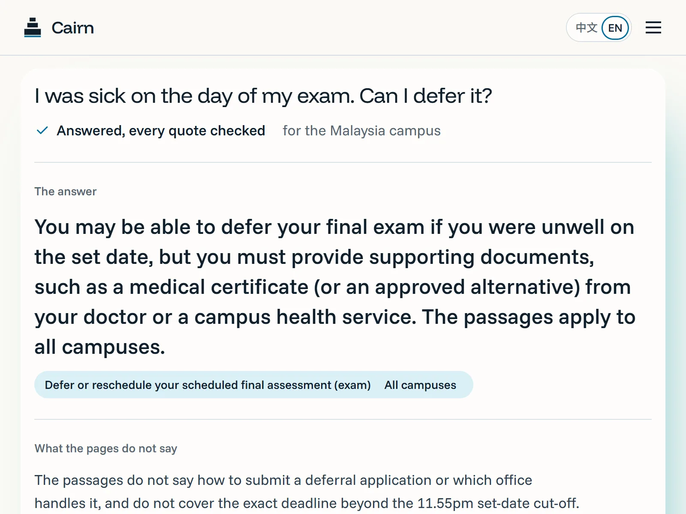
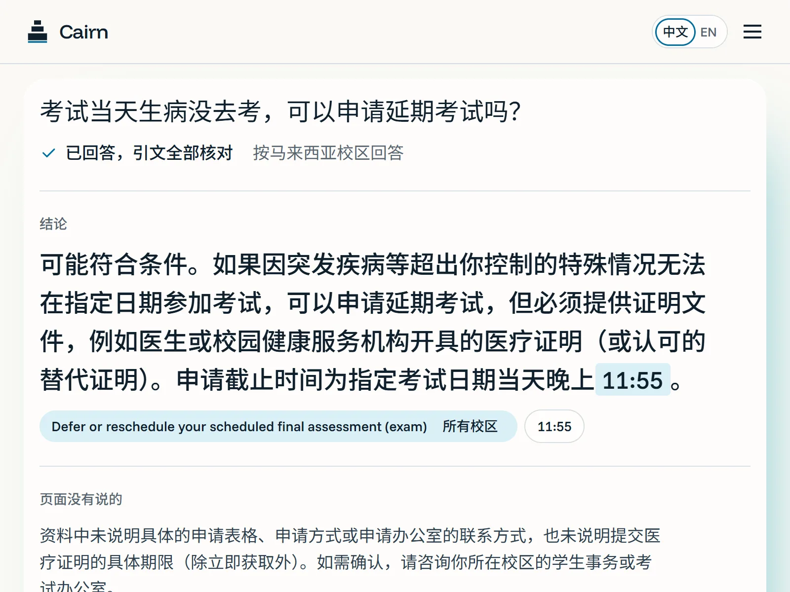
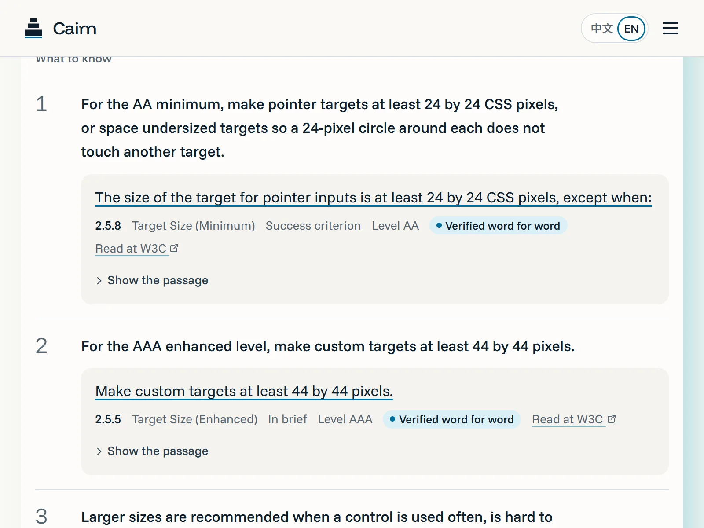
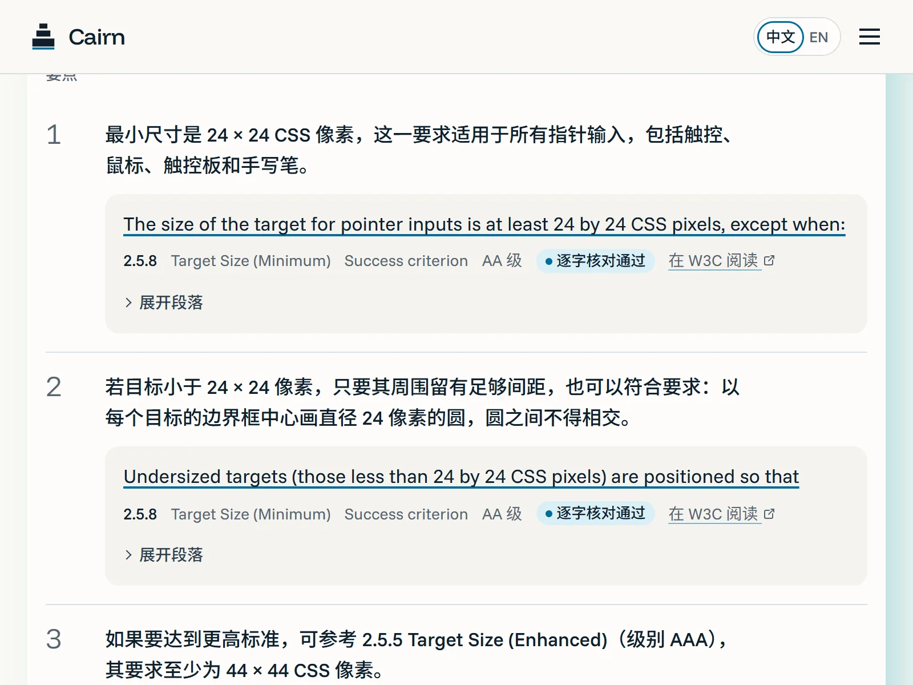
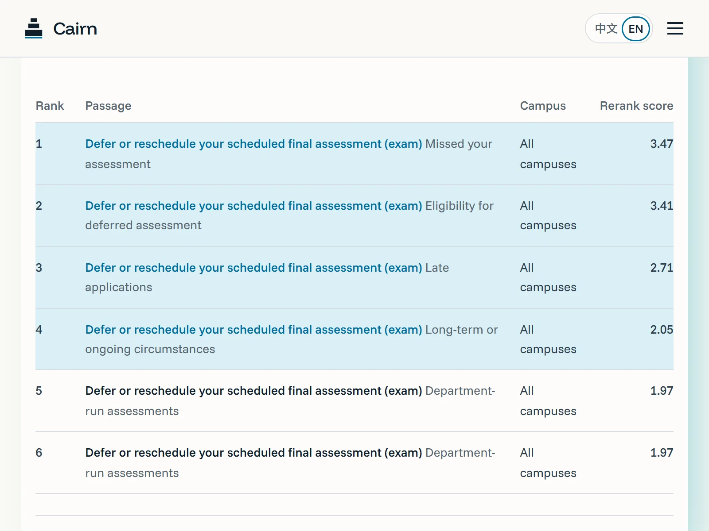
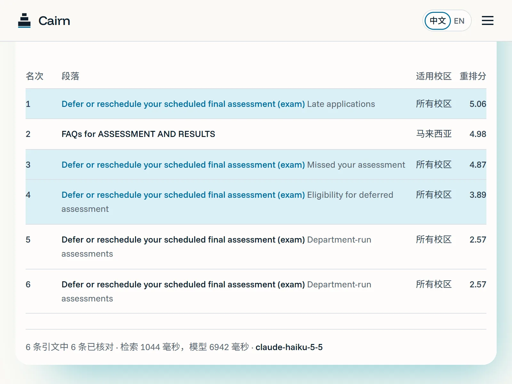
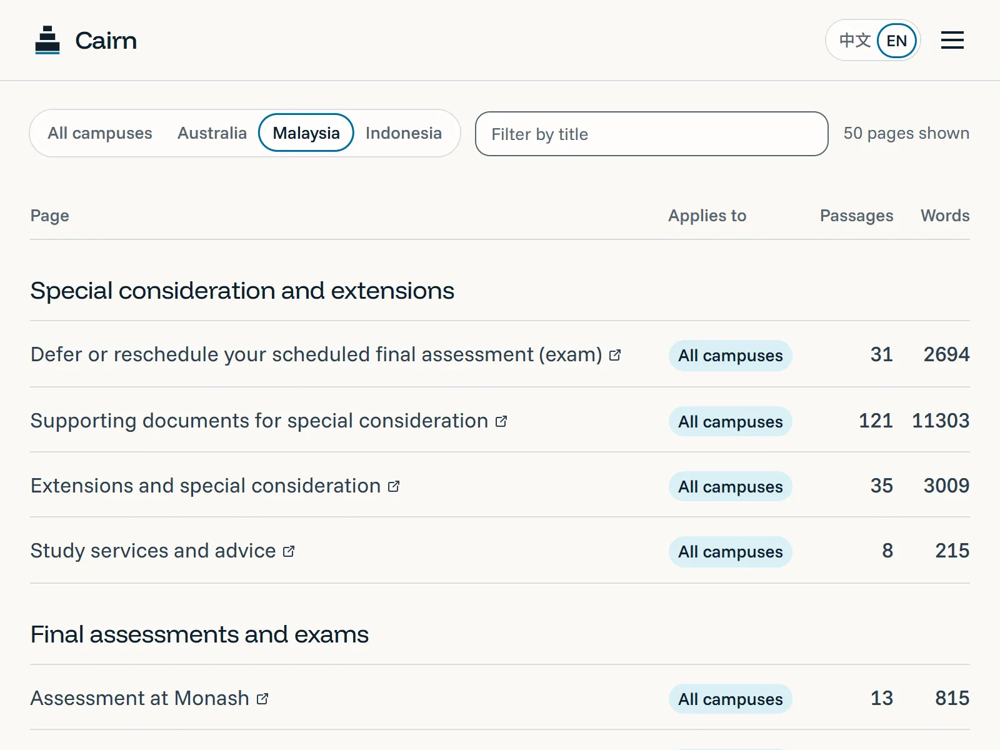
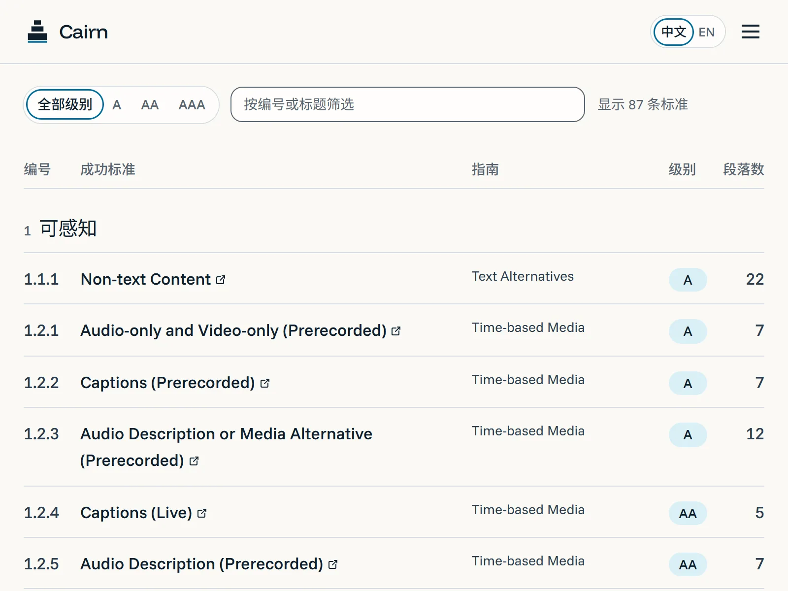

Cairn
A desk that answers from an organisation’s own published rules and quotes them word for word. This instance holds Monash University’s pages for students: special consideration, exams, withdrawing, key dates and disability support, for three campuses. You pick your campus, ask in English or Chinese, and the server checks every quote before you see it. 根据一个机构自己公开的规定来回答、并逐字引用原文的问答台。这一台装的是 Monash University 的学生页面：特殊考量、考试、退课、关键日期和残障支持，覆盖三个校区。先选校区，用中文或英文提问，服务器在你看到之前核对每条引文。
The demo is static: fourteen real questions, each answered by both engines and recorded on 10 November 2026. It cannot answer new ones. Cairn is unofficial and not affiliated with Monash University.演示是静态版：14 道真实问题，两种引擎各答一遍，记录于 2026 年 11 月 10 日，不能回答新问题。Cairn 是非官方项目，与 Monash University 无关。


The problem问题
Every semester students ask the same questions: I was sick on exam day, can I defer? What is the deadline for special consideration? If I withdraw after the census date, do I get my fees back? The answers are on the university’s own pages, but they are long, spread across sites and different for different campuses, so people ask friends or a chatbot and get a paraphrase. A paraphrase with the wrong deadline costs a semester.每学期学生都在问同样的问题：考试那天病了能不能延期？特殊考量最晚什么时候申请？过了 census date 退课学费还退吗？答案就在学校自己的页面上，但页面长、分散在不同站点、各校区还不一样，于是大家问朋友或问聊天机器人，拿到的是转述。截止时间转述错一个，就是一个学期。
What it does它做什么
- You pick your campus first. Shared pages are always searched; your campus adds its own.先选校区。通用页面始终会搜，再加上你校区自己的页面。
- The bottom line in one or two sentences, deadlines marked, the page and its campus as a pill.一两句话结论，截止时间标出，页面和适用校区列成胶囊。
- Every point rests on a sentence from the page the server has found word for word; if none is found, no answer.每个要点都落在服务器逐字找到的原句上；一句都找不到就不显示回答。
- No AI key is needed. A second engine answers with the page’s own sentences and never rewrites them; with a key, you can switch between the two on the same question.不接 AI 也能回答。第二个引擎直接用页面里的原句作答，一个字不改；有密钥时，同一题可以在两种回答之间切换。
- When the pages do not answer, it drafts the email you would send to the department. You copy it or open it in a mail app; nothing is sent for you.页面答不上时，替你起草一封问相关部门的邮件。复制或在邮件应用里打开，不会替你发送。
- The route under every answer, and a library of all 58 pages by topic that keeps every question it could not answer.每条回答下方的路线，以及按主题列出 58 个页面、记下每个答不上来的问题的资料库。








How it works怎么做到的
Retrieval, then generation limited to what was retrieved, then verification in code. The last step is what makes the first two trustworthy.先检索，再只根据检索结果生成，最后用代码核对。最后一步才让前两步可信。
- 1Campus, then question先选校区，再提问English or Chinese; a Chinese question is rendered in English for the search中文或英文；中文问题先译成一句英文用于检索
- 2Embed and retrieve向量检索e5-small; the 20 nearest of 747 passages, from the shared pages plus your campus’s owne5-small，747 段里最近的 20 段，范围是通用页面加本校区页面
- 3Rerank重排序bge-reranker; 6 keptbge-reranker，保留 6 段
- 4Write写回答Claude Haiku 5.5; sources limited to an enum of the retrieved ids; no invented dates, fees or contactsClaude Haiku 5.5，来源只能是检索到的段落 id，不许编日期、费用和联系方式
- 5Verify逐字核对every quote found word for word, or the answer is withheld每条引文逐字找到，否则拦截
- 6Answer回答deadline marked, the page and its campus labelled, the route shown underneath标出截止时间，标明页面和校区，路线在下方展开
Grounding as a mechanism把"有依据"做成机制
The model’s structured output has a source_id field whose allowed values are exactly the retrieved passage ids, so it cannot cite a source it was not given. The server then looks for every quote in its passage, and the pages shown come only from verified quotes.模型结构化输出里的 source_id 字段，允许值就是这次检索到的段落 id，它引不了没给过它的来源。服务器再把每条引文在原段落里查找，显示的页面只来自核对通过的引文。
Answering without a model不用模型也能答
Before large language models, assistants answered by finding the best sentence and showing it. The local engine does that: it takes the same retrieved passages, splits them into sentences, scores each against the question with the reranker already on the machine, and shows the best one as the bottom line with the next three as points. The answer is the quote, so it costs nothing and replies in one to two seconds. Putting both engines on the same question also shows what the model adds: it combines conditions from several sentences, which one sentence cannot.大语言模型出现之前，助手的做法是找到最合适的那句话再拿给你看。本地引擎就是这样：用同一批检索到的段落，切成句子，用机器上已有的重排模型给每句和问题打分，最高的一句做结论，后三句做要点。回答就是引文本身，所以不花钱，一两秒出结果。同一题两种引擎对比，也看得出模型多做了什么：它能把几句话里的条件合起来，单独一句话做不到。
Chinese questions, English pages中文问题，英文页面
A multilingual embedding model alone missed the deferral page for “I was sick on exam day”. Rendering the question in English before the search fixed it: Chinese questions went from 18 to 19 of 20 with the right page in the top five, and MRR from 0.69 to 0.86. The route panel shows the English search text, so nothing is hidden.只靠多语言向量模型时，"考试那天病了能不能延期"没找到延期页。先把问题译成英文再检索就好了：中文题前五命中从 20 道里的 18 道到 19 道，MRR 从 0.69 到 0.86。路线面板会显示那句英文检索词，不藏起来。
Three campuses, one filter三个校区，一个过滤
Searching only the chosen campus lost the shared pages; searching everything mixed Malaysian and Australian dates. The filter always includes the shared pages and adds the chosen campus, and every source carries a campus label, so a rule that is specific is visibly specific.只搜所选校区会丢掉通用页面；全搜又会把马来西亚和澳大利亚的日期混在一起。现在的过滤始终包含通用页面、再加所选校区，每条来源都带校区标签，专属的规定一眼看得出。
A corpus that is not ours资料不是我们的
The pages are the university’s, so they are not in the repository. It holds the page list and a script that reads the pages in your own browser; the desk shows short excerpts with a link to each page; the public demo carries the quotes but not whole passages. The same code serves another organisation from another folder of pages and another prompt.页面是学校的，所以不放进仓库。仓库里只有页面清单和一个在你自己浏览器里读页面的脚本；问答台只显示短引文并链接原页；公开演示里只有引文、没有整段原文。换一个机构的规定，就是换一个页面文件夹和一段提示词。
Measured实测
Retrieval over 45 questions written by the team the way students ask them (25 English, 20 Chinese), each labelled with the Monash page that answers it. A method scores when that page is in its top 1, 3 or 5 passages.检索评测用团队按学生问法写的 45 道题（英 25、中 20），每题标出能回答它的 Monash 页面；页面进入某方法的前 1、3、5 名就算命中。
| Method方法 | Top 1前 1 | Top 3前 3 | Top 5前 5 | MRR@10 |
|---|---|---|---|---|
| Keyword (BM25)关键词（BM25） | 11 / 45 | 22 / 45 | 25 / 45 | 0.38 |
| Vector向量 | 26 / 45 | 35 / 45 | 41 / 45 | 0.71 |
| Hybrid, RRF fusion混合，RRF 融合 | 26 / 45 | 36 / 45 | 40 / 45 | 0.70 |
| Vector + rerank向量 + 重排序 | 29 / 45 | 39 / 45 | 43 / 45 | 0.76 |
| Translate + vector + rerank (in use)翻译 + 向量 + 重排序（采用） | 34 / 45 | 41 / 45 | 44 / 45 | 0.84 |
| Check检查 | Result (10 November 2026)结果（2026 年 11 月 10 日） |
|---|---|
| Smoke test, 7 live questions with campus冒烟测试，7 道带校区的实问 | 7 of 7 requests succeeded: four answered with every quote verified, one honestly not covered, one asked for a missing detail, one injection attempt (a false deadline) that the desk declined to confirm.7 次请求全部成功：4 道回答且引文全部核对通过，1 道如实未覆盖，1 道要求补充细节，1 道注入攻击（谎称的截止时间）没有被认可。 |
| Local engine, the same 45 questions本地引擎，同样的 45 道题 | Answered 41; the bottom line came from the right page in 26 of those. Five more questions the pages do not cover all came back as not covered.回答了 41 道，其中 26 道的结论出自正确页面。另外 5 道页面没有覆盖的题，全部如实答未覆盖。 |
| The library资料库 | 58 public pages, 747 passages, read on 9 November 2026; every answer links to its page.58 个公开页面、747 个段落，2026 年 11 月 9 日读取；每条回答都链接到原页。 |
| Accessibility (axe-core 4.10)无障碍（axe-core 4.10） | 0 violations: five pages, both languages, desktop and phone.0 违规：5 个页面、中英文、电脑和手机。 |
Measurements, not accuracy: they count the right page, not the right wording. Team-written questions, no user testing yet.是测量值不是准确率：数的是页面对不对，不是措辞对不对。题目团队自拟，还没有用户测试。
What I learned, and the limits学到的，和局限
Learned学到的
- Pick the corpus by need, not by licence. The first corpus was WCAG 2.2: clean to license, and nobody needed it. The mechanism stayed; the corpus went.按需求选资料，不是按许可证。第一版装的是 WCAG 2.2：许可干净，没人需要。机制留下，资料换掉。
- Grounding has to be a mechanism, not a prompt: the enum and the server check did the work."有依据"必须是机制，不是提示词：枚举和服务器核对才是起作用的部分。
- Measure retrieval separately and read the misses; the translation fix came from the trace of one bad answer.检索单独测，并且去看没命中的题；翻译这一步是从一条坏回答的路线里看出来的。
Limits局限
- 58 pages only: no unit guides, no faculty rules, nothing behind a login. Rules change; the desk shows what the pages said when read.只有 58 个页面：没有单元指南、院系规定，没有登录后的内容。规定会变，问答台显示的是读取当时的说法。
- An exact quote can still be misapplied, for example an Australian rule to a Malaysia student; the campus label is there so you can see it. Read the page, or ask Monash Connect.引文一字不差，回答仍可能用错，比如把澳洲的规定答给马来西亚的学生；校区标签就是为了让你看出来。请读原页，或问 Monash Connect。
- The verifier rejects paraphrase, so some good answers are withheld, by choice.核对器不接受改写，有些好回答会被拦下，这是有意的取舍。
- The local engine shows one sentence at a time and cannot combine two rules. When its best sentence comes from the wrong page, you get an exact quote of the wrong rule; the page name beneath is how to tell.本地引擎一次只给一句话，不会把两条规定合起来。最高分的句子出自错的页面时，你拿到的是一句一字不差、但不对题的原话，要靠下方的页面名来分辨。
- Built with Claude Code under the team’s direction. Page text © Monash University, quoted in short excerpts with links; unofficial, not affiliated.在团队指挥下用 Claude Code 完成。页面文字版权归 Monash University，仅短句摘录并附链接；非官方，无关联。